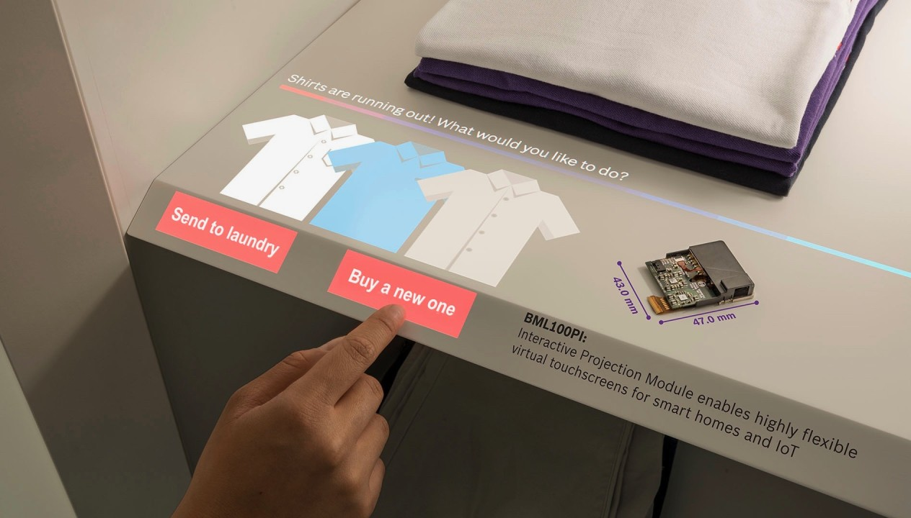

Inventory Management:
Smart wardrobes could automatically keep track of your clothing inventory using RFID tags or similar
technology.
This would make it easy to see what items you own, their condition, and when they were last worn.
Virtual Styling:
Imagine a virtual stylist that analyzes your
clothing collection and suggests outfits based on your personal style, the weather, or upcoming events.
This could help streamline the process of getting dressed and ensure that you always look your best.
Integrated laundary Systems:
Smart wardrobes could have built-in laundry systems that automatically clean and care for your clothing.
This might include features like steam cleaning, deodorizing, and stain removal, all tailored to the
specific needs of each garment.
Customize & tailoring:
With advancements in 3D scanning and printing technology,
smart wardrobes could offer personalized tailoring services right in your home. This would allow you to
easily alter
clothing to fit your exact measurements or even create custom designs from scratch.
Sustainability Tracking :
Many smart wardrobes might include features to help users
track the environmental impact of their clothing choices. This could include information on the
materials used, where
and how the garments were produced, and suggestions for more sustainable alternatives.
Smart Fabric Technology:
Future clothing could incorporate smart fabric technology that
adjusts to the wearer's preferences and needs. For example, fabrics that regulate temperature, monitor
health metrics, or change
color and style with the push of a button.
Integrated Shopping & Recommendations:
Smart wardrobes could be connected to online shopping platforms,
allowing users to easily reorder favorite items or discover new pieces that complement their existing
wardrobe. These recommendations
could be based on past purchases, current trends, or personal style preferences.
Overall the smart wardrobes holds exciting possibilities for making the process of
managing and enjoying our clothing more convenient, personalized, and sustainable.
Back To Home...